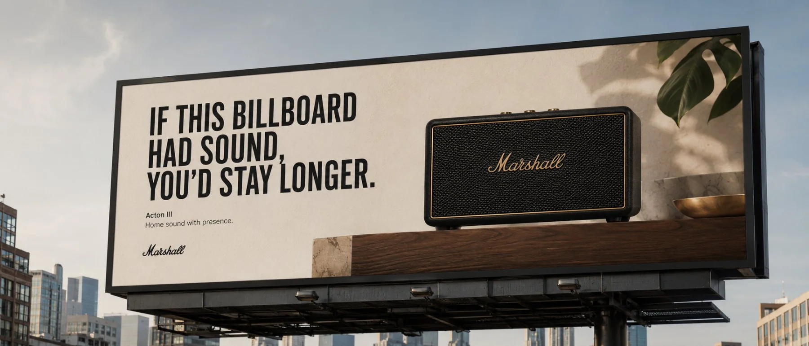
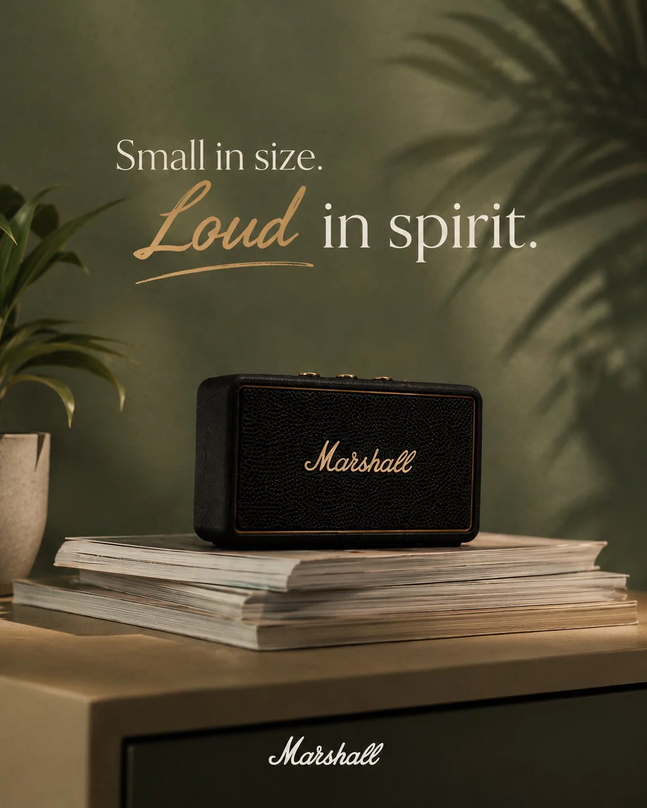
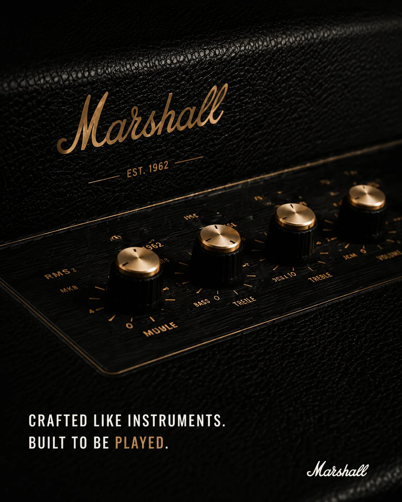
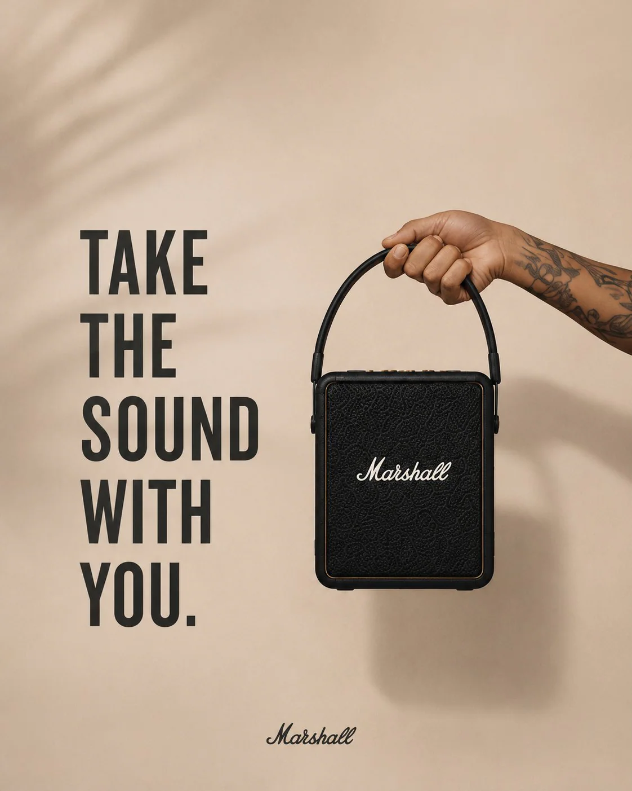
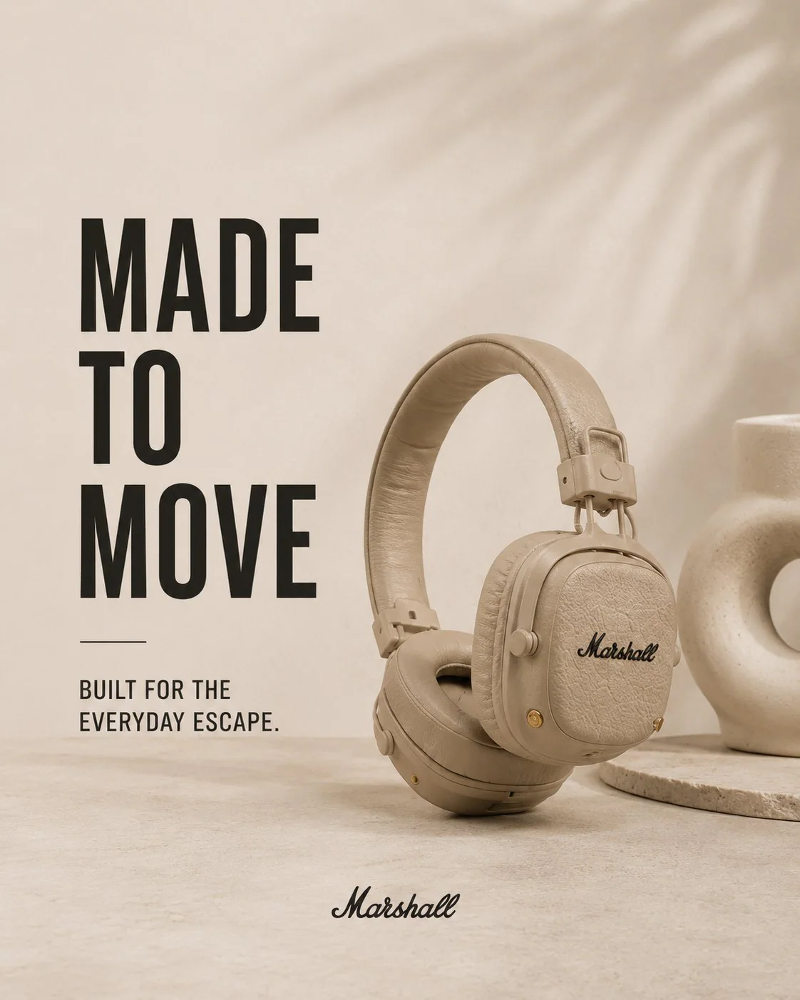
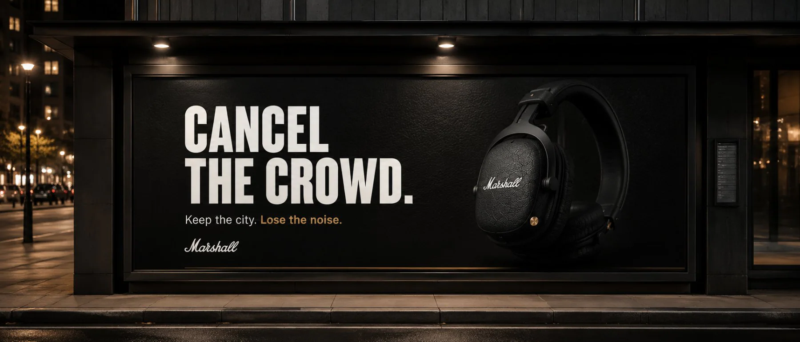
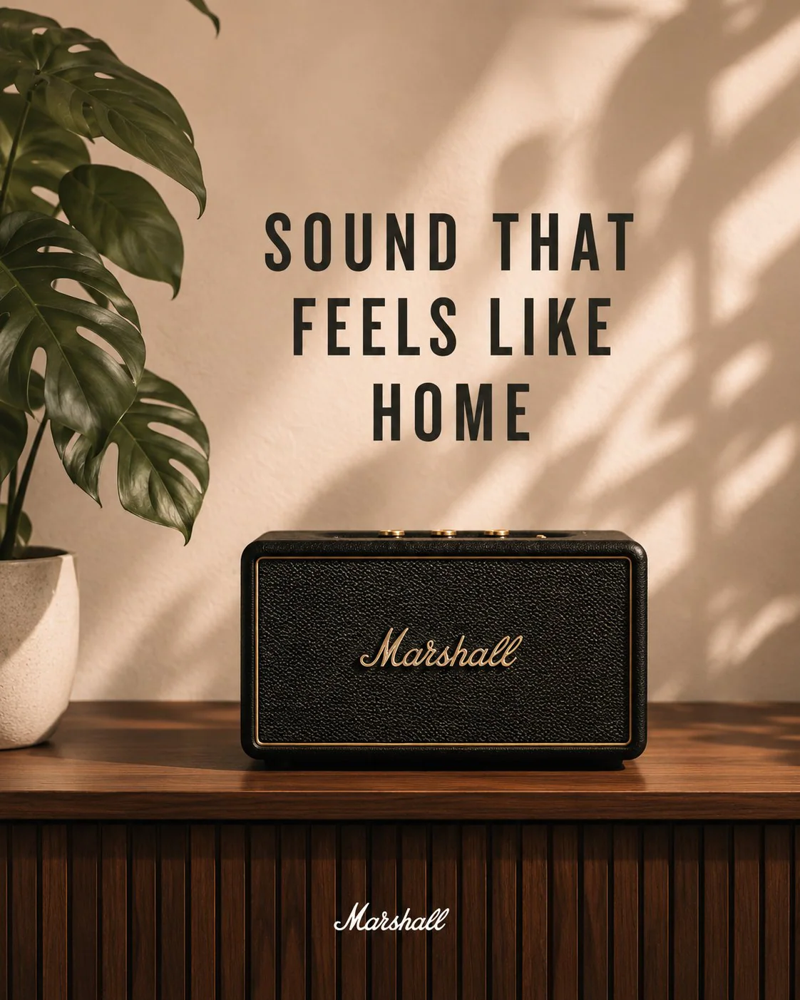
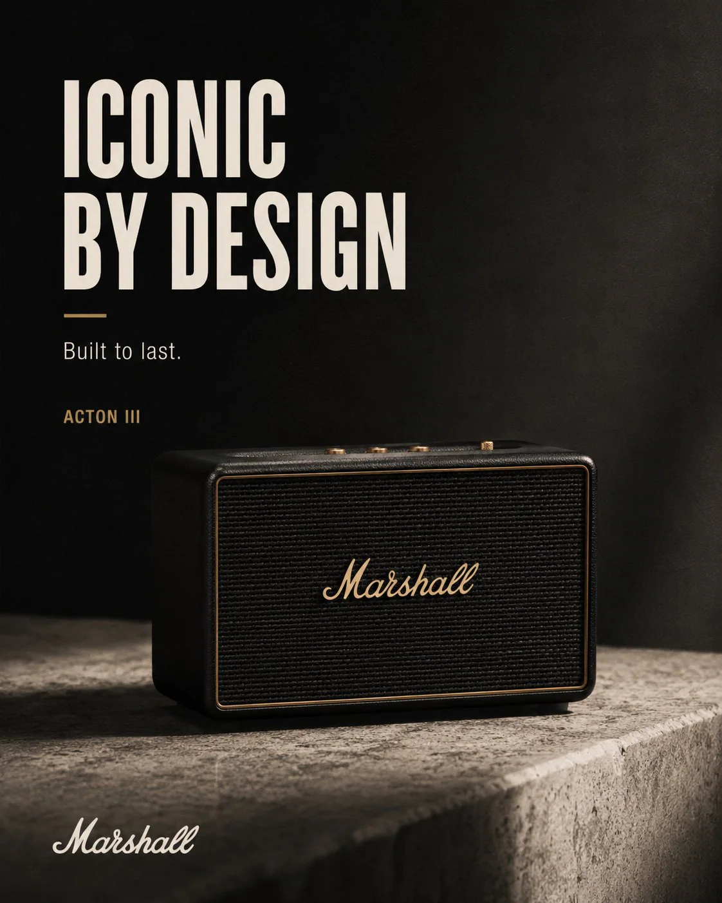
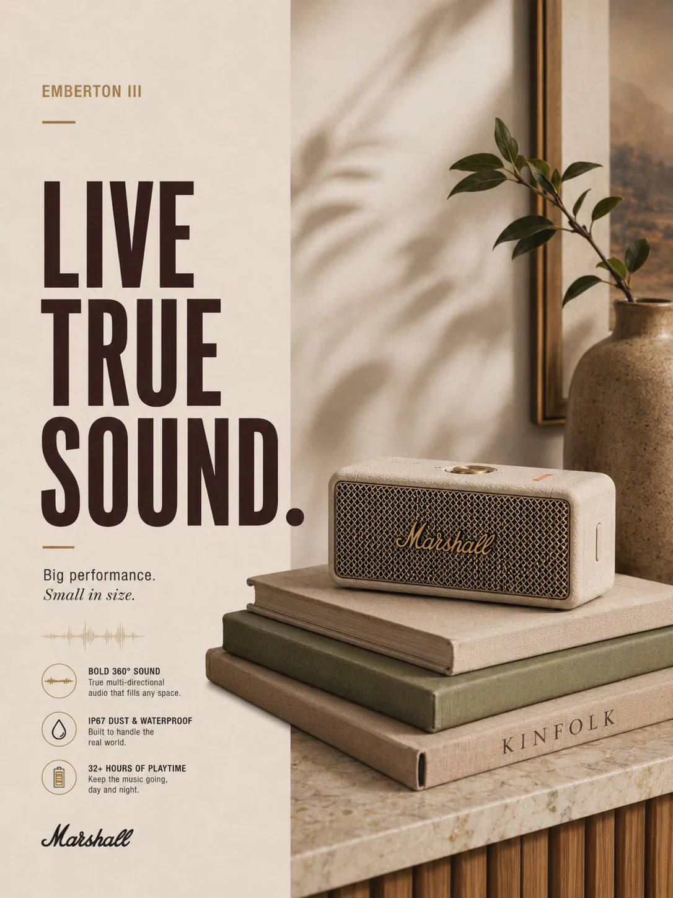
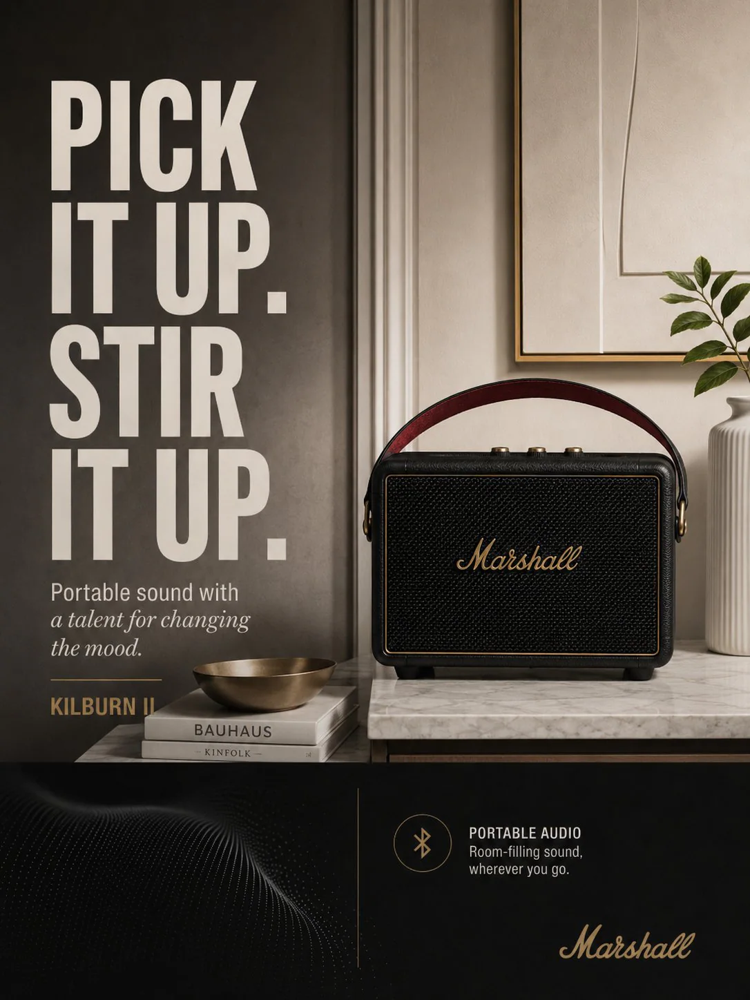

(project summary)
Running the socials of a brand people already trust — without dulling what makes it loud.
Calendars, captions and community, planned and posted so the business can run itself.
(project segments)
social handling
content calendar
(niche)
consumer audio










